Analysis of Historical Weather Data for Los Angeles, CA
Fri, 04 Aug 2017
Climate Change, Data Science, Data Visualization, Los Angeles, Weather
This post explores historical weather data from Los Angeles, California over the period of 1906 to the present using Pandas and Matplotlib. The data in the post was collected from the National Centers for Environmental Information website. An order must be placed through the website to obtain a (temporary) link to download the data.Organizing the data by year, an animation of the max temperatures throughout the year is constructed. Upward and downward trends over time would indicate increasing and decreasing temperatures respectively.

Figure 1: Plot of Temperatures by Day of Year
Next, a histogram is constructed for each year and the result is plotted in sequence. Rightward and leftward trends over time would indicate increasing and decreasing temperatures respectively.

Figure 2: Histogram of Temperatures
Next, the median and mean of annual minimum and maximum temperatures are computed (4 sets of data in total). For each grouping of the data, a scatter plot, regression line, and residual plot is created. The results are shown in Figures 3 and 4.
| 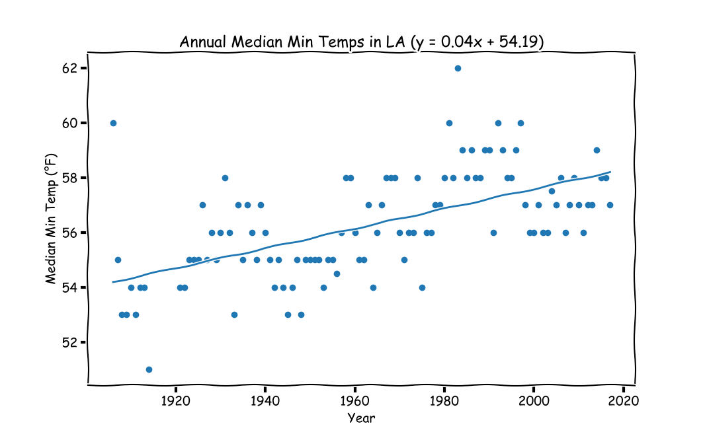 | 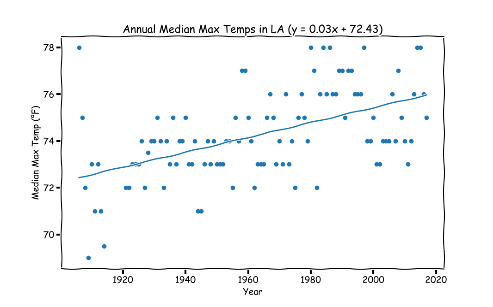 |
| 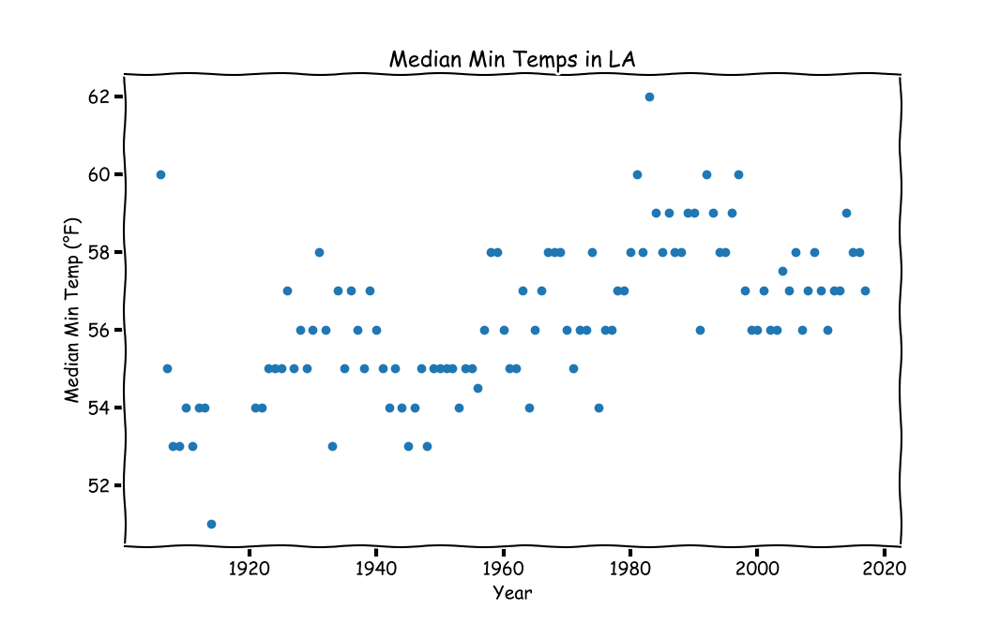 | 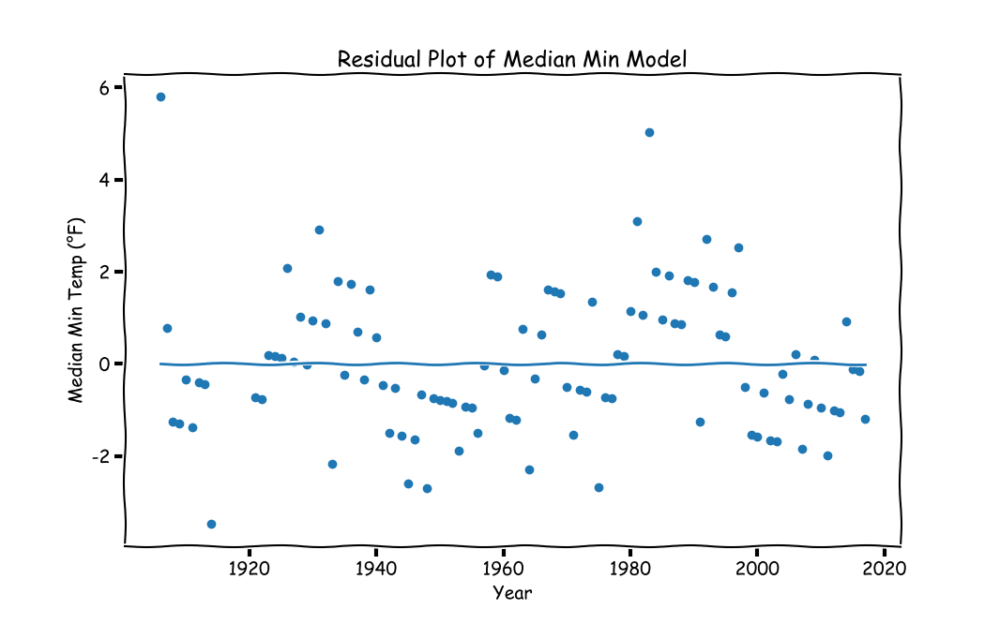 |
| 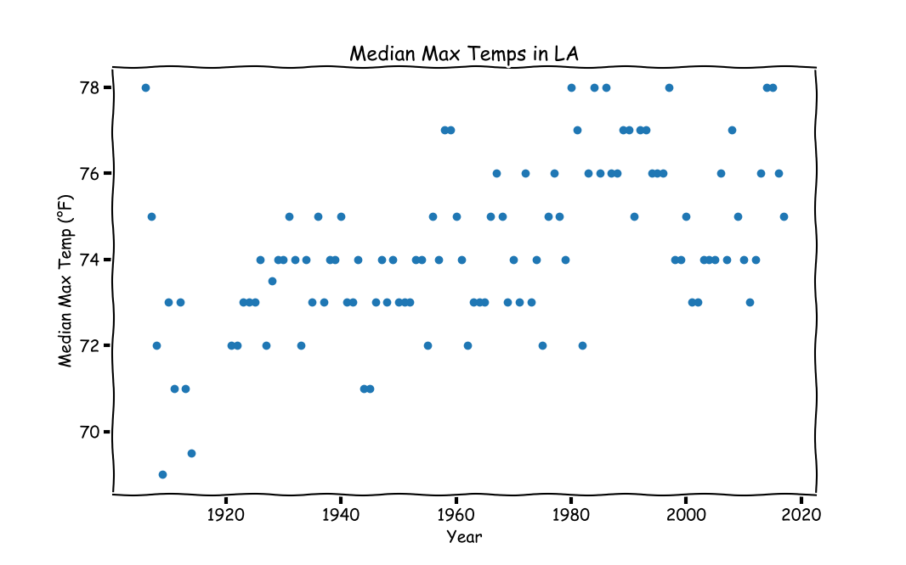 | 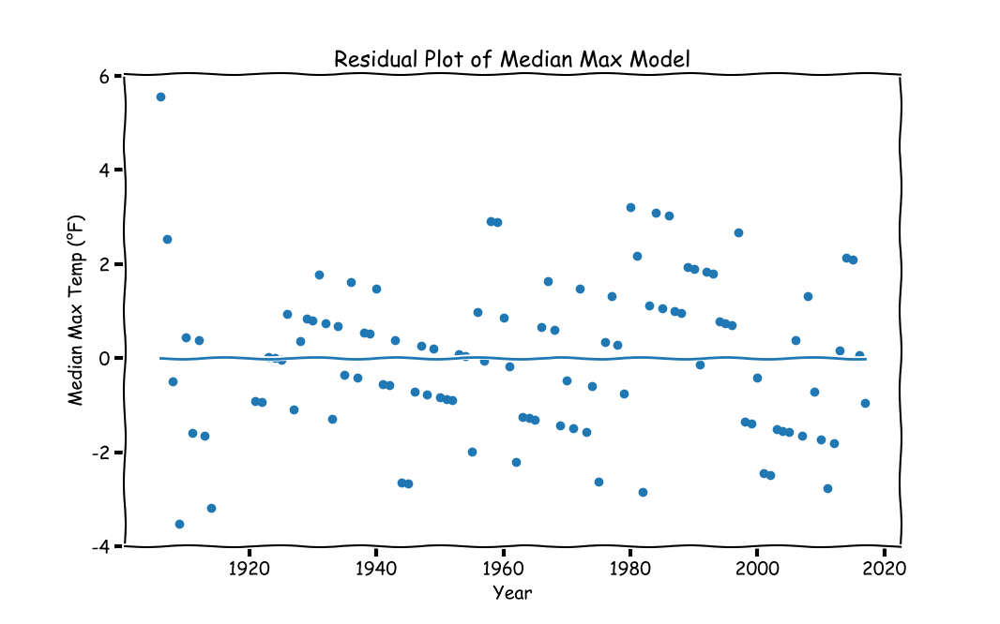 |
{kind=link}
{kind=link}
{kind=link}
{kind=link}
{kind=link}
{kind=link}
Figure 3: Plot of Median Annual Temperatures
| 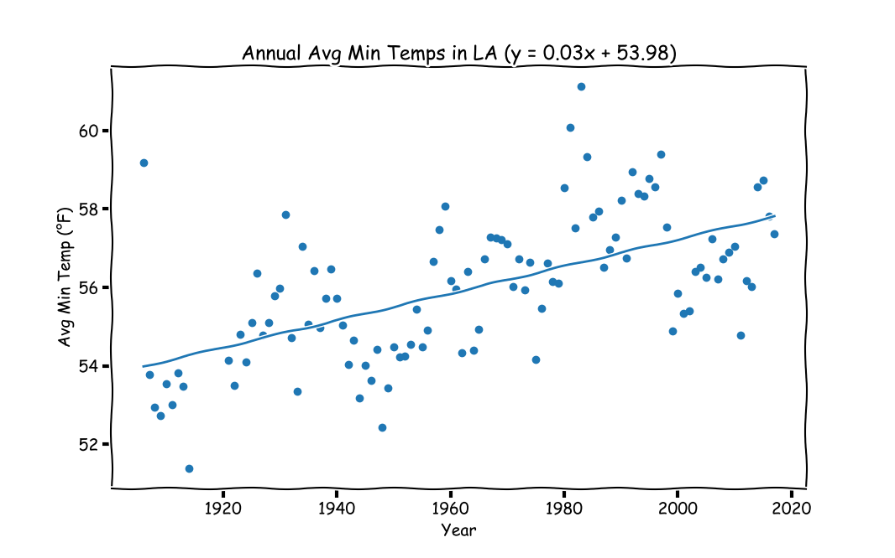 | 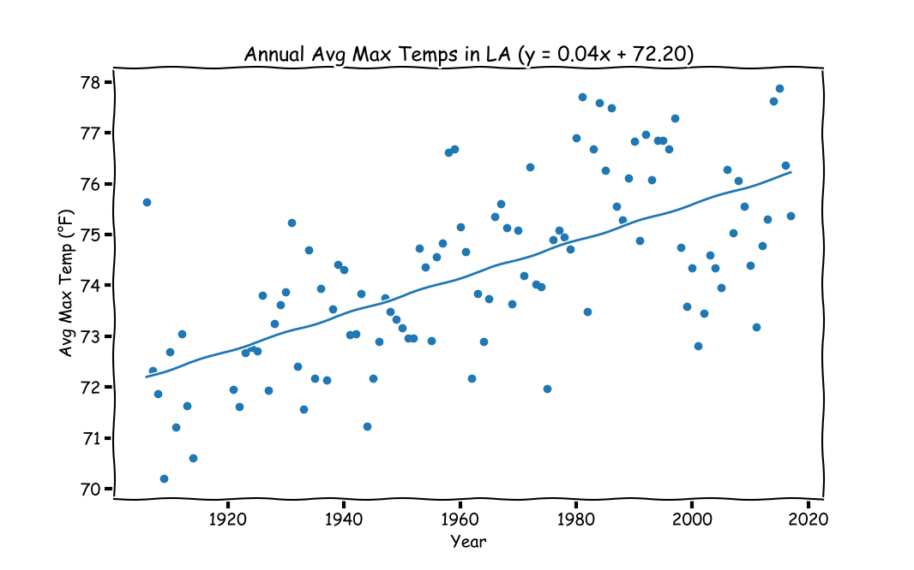 |
| 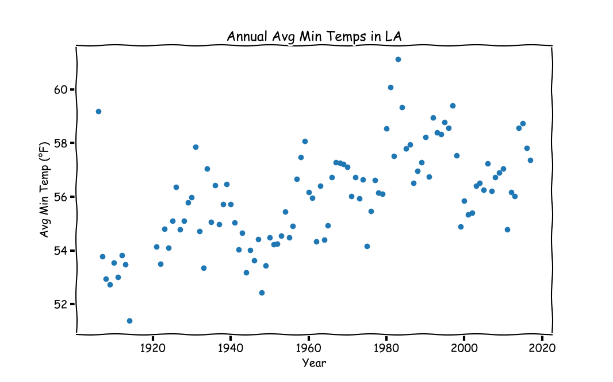 | 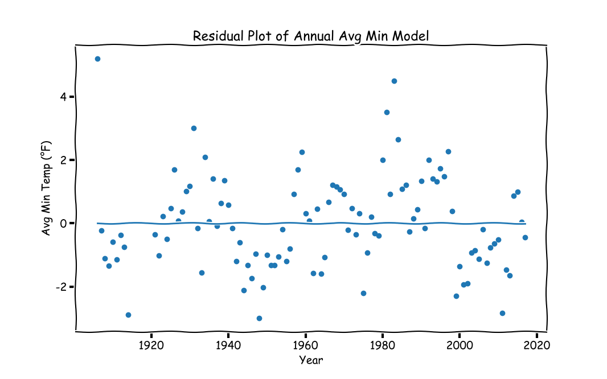 |
| 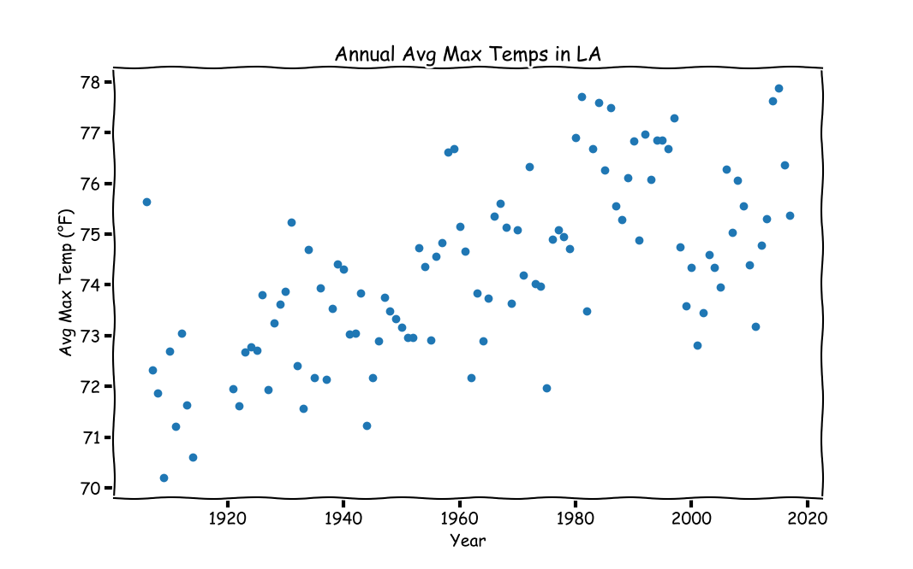 | 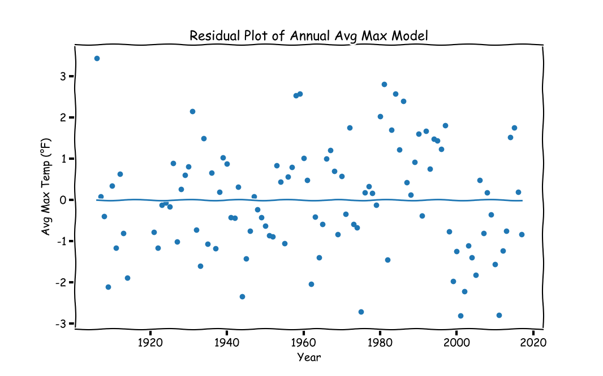 |
{kind=link}
{kind=link}
{kind=link}
{kind=link}
{kind=link}
{kind=link}
Figure 4: Plot of Mean Annual Temperatures
The slope of each plot shows an increasing trend and the coefficient of each model is statistically significant. The p-values are listed below in Table 1.
| Mean | Median | |
|---|---|---|
| Min | 2.3290581226e-11 | 2.44485850314e-11 |
| Max | 3.53786204839e-14 | 7.10486692764e-09 |
Table 1: P-Values for Regression Models
The r-squared for each regression model is listed below in Table 2.
| Mean | Median | |
|---|---|---|
| Min | 0.5920 | 0.5915 |
| Max | 0.6524 | 0.5259 |
Table 2: R-Squared Values for Regression Models
Organizing the data by month, a calendar of the monthly trends is constructed. Each month shows an increasing trend. Only the plot of average monthly maximum temperatures is shown for brevity.
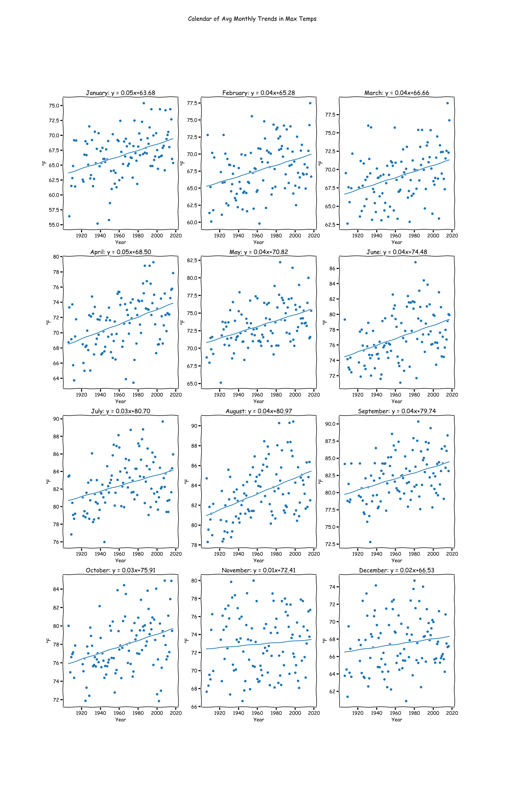
Figure 5: Calendar of Monthly Trends
{kind=link}
This data in the above plot can also be arranged as an animated calendar of heatmaps.

Figure 6: Heatmap of Temperatures as a Calendar
The code used to create the above plots and animations follows (best viewed in an IPython Notebook).
import pandas as pd
import numpy as np
import matplotlib.pyplot as mpl
import matplotlib.animation as mpla
from scipy.stats import linregress
from datetime import datetime
#%%
D = pd.read_csv('1035207.csv')
CN = 'TMAX' #Column of data to look at (min or max daily temp)
D = D[D[CN] != -9999].reset_index(drop=True) #Filter out missing values
IDPI = 96 #Image DPI
IS = (16 / 1.5, 10 / 1.5) #Image size (inches)
FY = 1906 #First Year
LY = 2017 #Last Year
TMIN = D[CN].min() #Minimum temperature
TMAX = D[CN].max() #Maximum temperature
x = np.array([FY, LY]) - FY #Used for drawing the trend lines
#Some strings for graph labels/titles
MNS = ['January', 'February', 'March', 'April', 'May', 'June', 'July',
'August', 'September', 'October', 'November', 'December']
VNL = ' Max'
#Date-time object for plotting
D['DT'] = np.array([datetime(year = i // 10000, month = (i // 100) % 100, day = i % 100) for i in D['DATE']])
#Integer day of year (1-365)
D['DOY'] = D['DT'].apply(lambda t : t.timetuple().tm_yday)
D['YEAR'] = D['DATE'] // 10000
D['MNTH'] = (D['DATE'] // 100) % 100
D['DAY'] = D['DATE'] % 100
mpl.xkcd()
#Get color of XKCD plot
#fig, ax = mpl.subplots()
#l = ax.plot(np.nan)
#PCOL = l[0].get_color()
PCOL = '#1f77b4'
#Data grouped by each year
YG = D.groupby('YEAR', as_index = False)
yni = np.array(list(YG.groups.keys())) #These are years; some are missing
yn = np.array(yni, dtype = str) #For plot titles
#Opacity values for line animations
nopv = 12 #Number of opacity values
opv = np.linspace(0.22, 0.57, num = nopv) ** 2 #Opacity Values
#%% Plot animation of yearly temps over time in calender heatmap
C = np.zeros((20, 21))
fig, ax = mpl.subplots(3, 4, figsize = IS)
pim = np.zeros((3, 4), dtype = object)
for i in range(3):
for j in range(4):
pim[i, j] = ax[i, j].imshow(np.zeros((20, 21)), interpolation = 'nearest', vmin=TMIN, vmax=TMAX, animated = True)
ax[i, j].set_title(MNS[i * 4 + j])
ax[i, j].set_axis_off()
cb = fig.colorbar(pim[0, 0], ax = ax.ravel().tolist())
cb.set_label('°F')
def UpdateF(ai):
CG = YG.get_group(yni[ai]) #Get data for the year
fig.suptitle(yn[ai] + ' Calendar of' + VNL + ' Temps in LA')
for ind in range(12):
mcd = CG[CG['MNTH'] == (ind + 1)][CN].values.copy()
mcd = mcd.astype(np.uint8)
mcd.resize(5, 7)
i, j = ind // 4, ind % 4
pim[i, j].set_data(mcd)
print('{:3d}/{:3d}'.format(ai, len(yn)))
#Only keep years with more than 200 data points recorded (animation year indices)
ayi = np.arange(len(yn))[YG.count()['MNTH'] > 200]
ani = mpla.FuncAnimation(fig, UpdateF, frames = ayi, interval = 200, repeat = False)
ani.save(CN + 'CTPlot.gif', dpi = IDPI)
mpl.show()
#%% Plot animation of yearly temps over time
L = [] #Previous plots in animation
fig, ax = mpl.subplots(figsize = IS)
ax.set_ylim([0, 365])
ax.set_ylim([D[CN].min() - 5, D[CN].max() + 5])
ax.set_xlabel('Day of Year (1-365)')
ax.set_ylabel('Temperature (°F)')
def UpdateF(i):
global lhg
for j, lhgj in enumerate(L[-nopv:]):
lhgj[0].set_alpha(opv[j]) #Decay from max opacity to min opacity
CG = YG.get_group(yni[i]) #Get data for the year
L.append(ax.plot(CG['DOY'], CG[CN], color = PCOL))
ax.set_title(VNL + ' Temperatures in Los Angeles: ' + yn[i])
print('{:3d}/{:3d}'.format(i, len(yn)))
#Only keep years with more than 200 data points recorded (animation year indices)
ayi = np.arange(len(yn))[YG.count()['MNTH'] > 200]
ani = mpla.FuncAnimation(fig, UpdateF, frames = ayi, interval = 200, repeat = False)
#ani.save(CN + 'TPlot.mp4', dpi = IDPI)
mpl.show()
#%% Plot animation of temperature distribution over time
L = []
fig, ax = mpl.subplots(figsize = IS)
ax.set_xlim([D[CN].min() - 5, D[CN].max() + 5])
ax.set_ylim([0, 75])
ax.set_xlabel('Temperature (°F)')
ax.set_ylabel('Frequency')
def UpdateF(i):
global lhg
for j, lhgj in enumerate(L[-nopv:]):
lhgj[0].set_alpha(opv[j]) #Decay from max opacity to min opacity
CG = YG.get_group(yni[i])
hbinc, hbin = np.histogram(CG[CN], bins = 18)
L.append(ax.plot((hbin[:-1] + hbin[1:]) / 2, hbinc, color = PCOL))
ax.set_title(VNL + ' Temperatures in Los Angeles: ' + yn[i])
print('{:3d}/{:3d}'.format(i, len(yn)))
#Only keep years with more than 200 data points recorded (animation year indices)
ayi = np.arange(len(yn))[YG.count()['MNTH'] > 200]
ani = mpla.FuncAnimation(fig, UpdateF, frames = ayi, interval = 200, repeat = False)
#ani.save(CN + 'Hist.mp4', dpi = IDPI)
mpl.show()
#%% Annual Median temperatures
M = YG.median()[CN].values
#%% Make scatter plot of median temps
fig, ax = mpl.subplots(figsize = IS)
ax.scatter(yni, M)
ax.set_xlabel('Year')
ax.set_ylabel('Median' + VNL + ' Temp (°F)')
ax.set_title('Median' + VNL + ' Temps in LA')
fig.savefig(CN + 'MedScat.png', dpi = IDPI)
mpl.show()
#%% Fit regression model to median
m, b, lrr2, lrpv, serr = linregress(yni - FY, M)
print('R-Squared for Annual Median Model: {:0.4f}'.format(lrr2))
print('P-Value for Annual Median Model: ' + str(lrpv))
#%% Plot the results
y = m * x + b
fig, ax = mpl.subplots(figsize = IS)
ax.scatter(yni, M)
ax.plot(x + FY, y)
ax.set_xlabel('Year')
ax.set_ylabel('Median' + VNL + ' Temp (°F)')
ax.set_title('Annual Median' + VNL + ' Temps in LA (y = {:.2f}x + {:.2f})'.format(m, b))
fig.savefig(CN + 'MedReg.png', dpi = IDPI)
mpl.show()
#%% Residual plot of median regression model
YH = m * (yni - FY) + b
fig, ax = mpl.subplots(figsize = IS)
ax.scatter(yni, M - YH)
ax.plot(x + FY, [0, 0])
ax.set_xlabel('Year')
ax.set_ylabel('Median' + VNL + ' Temp (°F)')
ax.set_title('Residual Plot of Median' + VNL + ' Model')
fig.savefig(CN + 'MedResp.png', dpi = IDPI)
mpl.show()
#%% Median' + VNL + ' Temperature in 50 years
y50 = m * 50 + b
print('Annual Median' + VNL + ' Temp in 50 Years: {:.0f}'.format(y50))
#%% Solve for boiling point of water
xc = (212 - b) / m
print('Predicted Year with Annual Median' + VNL + ' Temp = 212: {:.0f}'.format(xc))
#%% Annual Mean temperatures
M = YG.mean()[CN].values
#%% Make scatter plot of median temps
mpl.xkcd()
fig, ax = mpl.subplots(figsize = IS)
ax.scatter(yni, M)
ax.set_xlabel('Year')
ax.set_ylabel('Avg' + VNL + ' Temp (°F)')
ax.set_title('Annual Avg' + VNL + ' Temps in LA')
fig.savefig(CN + 'AvgScat.png', dpi = IDPI)
mpl.show()
#%% Fit regression model to Mean
m, b, lrr2, lrpv, serr = linregress(yni - FY, M)
print('R-Squared for Annual Avg Model: {:0.4f}'.format(lrr2))
print('P-Value for Annual Avg Model: ' + str(lrpv))
#%% Plot the results
y = m * x + b
fig, ax = mpl.subplots(figsize = IS)
ax.scatter(yni, M)
ax.plot(x + FY, y)
ax.set_xlabel('Year')
ax.set_ylabel('Avg' + VNL + ' Temp (°F)')
ax.set_title('Annual Avg' + VNL + ' Temps in LA (y = {:.2f}x + {:.2f})'.format(m, b))
fig.savefig(CN + 'AvgReg.png', dpi = IDPI)
mpl.show()
#%% Residual plot of mean regression model
YH = m * (yni - FY) + b
fig, ax = mpl.subplots(figsize = IS)
ax.scatter(yni, M - YH)
ax.plot(x + FY, [0, 0])
ax.set_xlabel('Year')
ax.set_ylabel('Avg' + VNL + ' Temp (°F)')
ax.set_title('Residual Plot of Annual Avg' + VNL + ' Model')
fig.savefig(CN + 'AvgResp.png', dpi = IDPI)
mpl.show()
#%% Mean temperature in 50 years
y50 = m * 50 + b
print('Annual Avg' + VNL + ' Temp in 50 Years: {:.0f}'.format(y50))
#%% Solve for boiling point of water
xc = (212 - b) / m
print('Predicted Year with Annual Avg' + VNL + ' Temp = 212: {:.0f}'.format(xc))
#%% Group data by year and month
MG = D.groupby(['YEAR', 'MNTH'], as_index = False)
MMT = MG.mean()
#%% For each month, plot average temperature over all years
fig, ax = mpl.subplots(4, 3, figsize = (20, 32))
fig.suptitle('Calendar of Avg Monthly Trends in' + VNL + ' Temps')
for i in range(12):
cind = (MMT['MNTH'] == (i + 1))
xv = MMT[cind]['YEAR'].values
yv = MMT[cind][CN].values
m, b, lrr2, lrpv, serr = linregress(xv - FY, yv)
y = m * x + b
ind = (i // ax.shape[1], i % ax.shape[1])
ax[ind].set_xlabel('Year')
ax[ind].set_ylabel('°F')
ax[ind].set_title('{:s}: y = {:.2f}x+{:.2f}'.format(MNS[i], m, b))
ax[ind].scatter(xv, yv)
ax[ind].plot(x + FY, y)
fig.savefig(CN + 'MnthReg.png', dpi = IDPI)